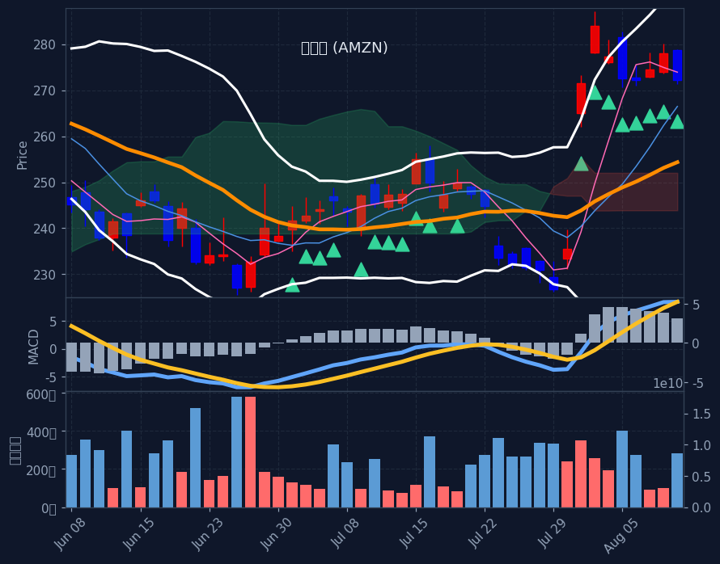

📊 미국장 장전(프리장) 리포트
61 / 100 — 탐욕
🌎미국 증시 마감


프리장에서 미국 증시는 전반적으로 상승세를 보이고 있습니다. 특히 기술주와 반도체 섹터가 강세를 주도하며 나스닥 선물과 필라델피아 반도체 지수의 상승을 이끌고 있습니다. 예상치를 하회한 CPI 물가 지표 발표가 시장의 긍정적인 분위기를 형성하는 데 기여했습니다.
직전 정규장 마감 후 발표된 미국의 7월 CPI 물가 지표가 예상치를 하회하며 인플레이션 둔화 기대감을 높였습니다. 이에 따라 금리 인상 중단 가능성이 부각되면서 기술주 및 반도체 관련 종목들이 프리장에서 강세를 보이고 있습니다. 특히 SOXL과 같은 반도체 3배 레버리지 ETF의 급등이 눈에 띕니다.
프리장에서 반도체 섹터가 3.26%로 가장 큰 상승폭을 기록하며 시장의 주도권을 잡고 있습니다. SOXL의 9.70% 급등을 비롯해 브로드컴, AMD, 엔비디아 등 주요 반도체 기업들의 주가도 견조한 흐름을 보이고 있습니다. 이는 금리 인하 기대감과 함께 AI 관련 수요 지속 전망이 반영된 결과로 풀이됩니다. 2차전지/리튬 섹터 역시 1.90% 상승하며 뒤를 잇고 있습니다. 반면, 마이크로소프트와 애플 등 일부 빅테크 종목은 소폭 하락하며 혼조세를 보이고 있으며, 헬스케어/바이오 및 에너지 섹터는 약세를 나타내고 있습니다. 이러한 흐름은 한국 증시에서도 기술주 및 성장주에 대한 긍정적인 투자 심리를 유발할 수 있습니다.
🇺🇸미국 야간 (선물·M7·SOXL · 마감 등락 + 프리장/애프터 등락)
📊 나스닥 선물 +0.75%
📊 S&P500 선물 +0.34%
- 메타 META·나스닥 마감 +0.7% · 프리장 +0.3%
- 테슬라 TSLA·나스닥 마감 +0.6% · 프리장 +0.3%
- 엔비디아 NVDA·나스닥 마감 -0.0% · 프리장 +1.3%
- 마이크로소프트 MSFT·나스닥 마감 -0.4% · 프리장 -0.7%
- 애플 AAPL·나스닥 마감 -1.1% · 프리장 -0.3%
- 아마존 AMZN·나스닥 마감 -2.1% · 프리장 +0.3%
- 알파벳 GOOGL·나스닥 마감 -3.8% · 프리장 +0.5%
- 한국 ETF(EWY) EWY 마감 +2.5% · 프리장 +4.0%
- SOXL(반도체 3X) SOXL 마감 +2.3% · 프리장 +9.2%
🚀프리장 급등 TOP5 (ABCD 필터 통과 종목 중)
-
램리서치
LRCX·나스닥 · 종가 $311.41 (전일 +1.64%) (프리장 +4.69%)
· 반도체장비A 시그널 ⓘ수렴대 위로 상승전환 (수렴 2.8%) / 120선 위 (+8.1%) · MACD[GC,상승]
-
델
DELL·NYSE · 종가 $440.97 (전일 -3.69%) (프리장 +3.28%)
· IT하드웨어B 시그널 ⓘ급등 (10일 +33%) / 20일선 위 (+4.3%, 60선기울기 +9.1%) / 단기눌림 (5일선 -2.1%, 5일고점 -9.2%) · 고점대비 -9.2%
-
ASML
ASML·나스닥 · 종가 $1,799.38 (전일 +3.80%) (프리장 +2.08%)
· 반도체 장비 및 테스트A 시그널 ⓘ수렴대 위로 상승전환 (수렴 2.7%) / 120선 위 (+14.1%) · MACD[GC,상승]
-
어펌 홀딩스
AFRM·나스닥 · 종가 $76.71 (전일 +1.54%) (프리장 +1.78%)
· 핀테크A/D 시그널 ⓘ수렴대 위로 상승전환 (수렴 2.0%) / 120선 위 (+19.8%) · MACD[GC,상승]
-
엔비디아
NVDA·나스닥 · 종가 $217.50 (전일 -0.02%) (프리장 +1.37%)
· 반도체D 시그널 ⓘ추세 반전 (일목구름 위, 5>20, MACD+, 20<60(초입))
🔥강세 섹터 (상승률 상위)
- 반도체 +3.26%
- 2차전지/리튬 +1.90%
- 기술/IT +1.43%
- 방산/우주항공 +0.48%
🔻약세 섹터 (하락률 상위)
- 에너지 -0.53%
- 헬스케어/바이오 -0.51%
- 태양광/신재생 +0.02%
- 금융 +0.09%
🧬관심 테마 대장 (양자·우주·AI 등)
-
어펌 홀딩스
AFRM·나스닥
A/D ⓘ · 종가 $76.71 (전일 +1.54%) (프리장 +1.78%) 1주일 -1.8%테마: 핀테크 · 시총 36조 3,581억 · 거래대금 2,295억
💰미국장 거래대금 순위 TOP10 (S&P500)
-
1.
엔비디아
NVDA·나스닥 · 종가 $217.50 (전일 -0.02%)
거래대금 31조 891억시총 7,456조 1,592억
-
2.
마이크로소프트
MSFT·나스닥 · 종가 $503.81 (전일 -0.44%)
거래대금 16조 4,142억시총 5,294조 9,149억
-
3.
아마존
AMZN·나스닥 · 종가 $272.27 (전일 -2.09%)
거래대금 12조 2,712억시총 4,156조 5,849억
-
4.
팔란티어
PLTR·나스닥 · 종가 $174.94 (전일 -0.17%)
거래대금 10조 6,553억시총 595조 5억
-
5.
ASML
ASML·나스닥 · 종가 $1,799.38 (전일 +3.80%)
거래대금 3조 7,610억시총 978조 2,076억
-
6.
일라이릴리
LLY·NYSE · 종가 $1,215.02 (전일 -1.37%)
거래대금 3조 6,320억시총 1,533조 5,086억
-
7.
램리서치
LRCX·나스닥 · 종가 $311.41 (전일 +1.64%)
거래대금 3조 3,783억시총 551조 5,249억
-
8.
팔로알토네트웍스
PANW·나스닥 · 종가 $383.80 (전일 -0.32%)
거래대금 3조 2,790억시총 442조 7,172억
-
9.
세일즈포스
CRM·NYSE · 종가 $197.47 (전일 -0.02%)
거래대금 3조 1,209억시총 228조 9,016억
-
10.
엑슨모빌
XOM·NYSE · 종가 $159.80 (전일 +0.01%)
거래대금 3조 1,082억시총 930조 32억
🏆미국 추천 Top 3



🇺🇸미국 종목 스크리닝 (전략별 칸 · A/B/C/D)
📊 A 수렴 후 상승 (3)
-
ASML
ASML·나스닥 · 종가 $1,799.38 (전일 +3.80%) (프리장 +2.08%)
A 시그널 ⓘ 20일선 +4.8%시총 978조 2,076억 · 거래대금 3조 7,610억테마: 반도체 장비 및 테스트수렴대 위로 상승전환 (수렴 2.7%) / 120선 위 (+14.1%) · MACD[GC,상승]
-
일라이릴리
LLY·NYSE · 종가 $1,215.02 (전일 -1.37%) (프리장 -0.47%)
A 시그널 ⓘ 20일선 +3.2%시총 1,533조 5,086억 · 거래대금 3조 6,320억테마: 제약수렴대 위로 상승전환 (수렴 2.1%) / 120선 위 (+15.8%) · MACD[0선돌파,GC,0선위,상승]
-
램리서치
LRCX·나스닥 · 종가 $311.41 (전일 +1.64%) (프리장 +4.69%)
A 시그널 ⓘ 20일선 +2.1%시총 551조 5,249억 · 거래대금 3조 3,783억테마: 반도체장비수렴대 위로 상승전환 (수렴 2.8%) / 120선 위 (+8.1%) · MACD[GC,상승]
🔄 B 20일선 눌림목 (1)
-
델
DELL·NYSE · 종가 $440.97 (전일 -3.69%) (프리장 +3.28%)
B 시그널 ⓘ 20일선 +4.3%시총 403조 2,749억 · 거래대금 2조 9,800억테마: IT하드웨어급등 (10일 +33%) / 20일선 위 (+4.3%, 60선기울기 +9.1%) / 단기눌림 (5일선 -2.1%, 5일고점 -9.2%) · 고점대비 -9.2%
📈 C 추세추종 (3)
-
마이크로소프트
MSFT·나스닥 · 종가 $503.81 (전일 -0.44%) (프리장 -0.85%)
C/D 시그널 ⓘ 20일선 +15.7%시총 5,294조 9,149억 · 거래대금 16조 4,142억테마: 시스템소프트웨어🔻 한국인 순매도 최근5일 1,453억(자금유출)대세 정배열 + 신고가 (-1.9%, 60선+22%)
-
팔란티어
PLTR·나스닥 · 종가 $174.94 (전일 -0.17%) (프리장 -1.66%)
C/D 시그널 ⓘ 20일선 +25.5%시총 595조 5억 · 거래대금 10조 6,553억테마: 소프트웨어🔻 한국인 순매도 최근5일 3,751억(자금유출)대세 정배열 + 신고가 (-2.6%, 60선+30%)
-
팔로알토네트웍스
PANW·나스닥 · 종가 $383.80 (전일 -0.32%) (프리장 -0.76%)
C 시그널 ⓘ 20일선 +10.9% ⚠️끝물ⓘ시총 442조 7,172억 · 거래대금 3조 2,790억테마: 시스템소프트웨어대세 정배열 + 신고가 (-0.9%, 60선+24%) · ⚠️끝물주의(이격정점통과(50%→24%))
🔃 D 추세 반전 (3)
-
엔비디아
NVDA·나스닥 · 종가 $217.50 (전일 -0.02%) (프리장 +1.37%)
D 시그널 ⓘ 20일선 +4.7%시총 7,456조 1,592억 · 거래대금 31조 891억테마: 반도체🔻 한국인 순매도 최근5일 1,929억(자금유출)추세 반전 (일목구름 위, 5>20, MACD+, 20<60(초입))
-
마이크로소프트
MSFT·나스닥 · 종가 $503.81 (전일 -0.44%) (프리장 -0.85%)
C/D 시그널 ⓘ 20일선 +15.7%시총 5,294조 9,149억 · 거래대금 16조 4,142억테마: 시스템소프트웨어🔻 한국인 순매도 최근5일 1,453억(자금유출)추세 반전 (일목구름 위, 5>20, MACD+, 20>60)
-
아마존
AMZN·나스닥 · 종가 $272.27 (전일 -2.09%) (프리장 +0.44%)
D 시그널 ⓘ 20일선 +7.0%시총 4,156조 5,849억 · 거래대금 12조 2,712억테마: 종합소매🇰🇷 한국인 순매수 최근5일 +2,701억추세 반전 (일목구름 위, 5>20, MACD+, 20>60)
※ S&P500 대상 A/B/C/D 전략별 분류(각 칸 거래대금순). 한 종목이 여러 전략에 잡히면 각 칸에 중복 표기. 백테스트상 기계적 엣지는 약하며 매수 추천이 아닙니다. 판단·책임은 본인.
🇰🇷한국인 자금흐름 (서학개미 · 최근 5거래일 순매수/순매도, 억원)
📅 결제일 8/5~8/11(5거래일) 기준 · 오늘 8/12 기준 약 1일 전 데이터 · T+2 결제 기준(실제 매매는 약 2거래일 전)
💸 한국인 순매수 일평균: +5,153억 (전주 +5,987억 대비 -13.9%) · 5일 총액 +25,767억
💰 순매수 TOP5 — 개별종목 (8/5~8/11 결제 기준)
- 아마존 AMZN·나스닥 +2,701억시총 4,151조 343억 · 거래대금 12조 2,549억
- 특정 티커 불명 X +1,614억
- 버티브 홀딩스 VRT·NYSE +1,110억시총 153조 3,512억 · 거래대금 1조 4,670억
- II-VI 주식회사 IIVI +1,094억
- 어플라이드 옵토일렉트로닉스 AAOI·나스닥 +993억시총 16조 572억 · 거래대금 1조 7,380억
📦 순매수 TOP5 — ETF (8/5~8/11 결제 기준)
- iShares 0-3개월 만기 미국 재무부 채권 ETF SHY +1,324억거래대금 2,941억
- 나스닥100 2X(QLD) QLD +855억거래대금 3,587억
- S&P500 ETF(VOO) VOO +782억거래대금 5조 1,645억
- 나스닥100 ETF(QQQM) QQQM +752억거래대금 9,827억
- 나스닥100 ETF(QQQ) QQQ +727억거래대금 29조 6,418억
🔻 순매도 TOP3 — 자금 유출 (8/5~8/11 결제 기준)
- 디렉션 데일리 세미컨덕터 불 3X ETF SOXL −14,581억거래대금 7조 973억
- 팔란티어 PLTR·나스닥 −3,751억시총 594조 2,059억 · 거래대금 10조 6,410억
- 엔비디아 NVDA·나스닥 −1,929억시총 7,446조 2,025억 · 거래대금 31조 476억
※ 예탁결제원(SEIBro) 최근 5거래일 한국인 순매수/순매도 결제금액(T+2) · 8/5~8/11 결제 기준(실제 매매는 약 2거래일 전). 자금이 어디로 유입·유출되는지 참고용.
🩹E 투매 바닥 반등 (투매 capitulation + 반등 · 🔥=지수 동반 바닥)
-
트레이드 데스크
TTD·나스닥 · $13.56
+1.27%
RSI 27
· 개별 바닥(지수RSI 58·공포탐욕 61, 시장 양호)투매바닥 반등 (RSI 27·50선-29%·거래량4.9x)
※ 투매 바닥(RSI≤30+50선이격+거래량폭증)에서 반등 시작 포착, 4시간봉 RSI도 과매도. 🔥는 지수(나스닥/S&P·코스피)도 RSI<35 동반 바닥(강신호). 떨어지는 칼날 위험 — 매수 추천 아님, 판단·책임 본인.
🚀급등 초입 (20일 신고가 돌파·거래량 급증)
-
리뉴 에너지 글로벌
RNW·나스닥 · $6.85
+11.75%
급등초입 (20일돌파·거래량19.1배·당일+11.7%·20선+10%)
※ 급등 초입(추세확인보다 빠른 돌파 진입) 참고용. 백테스트 표본 적고 상승장 기준 — 가짜 신호·되돌림 위험, 매수 추천 아님.
📐F. 60일선 지지 (60일선까지 눌렸다 지지 마감 · 참고용)
-
페르미
FRMI·나스닥 · $7.12
+21.09%
60일선 지지 (저가 -2.4%·종가 +2.5%·꼬리지지 56%)
-
테라다인
TER·나스닥 · $379.56
+3.96%
60일선 지지 (저가 -1.8%·종가 +0.5%·꼬리지지 50%)
-
매드리갈 파마슈티컬스
MDGL·나스닥 · $535.27
+3.87%
60일선 지지 (저가 -0.6%·종가 +3.8%·꼬리지지 99%)
-
D.R. 호튼
DHI·NYSE · $150.79
+2.82%
60일선 지지 (저가 -2.3%·종가 +0.6%·꼬리지지 99%)
-
TKO 그룹 홀딩스
TKO·NYSE · $194.73
+2.80%
60일선 지지 (저가 -2.4%·종가 +0.5%·꼬리지지 98%)
-
레나(Lennar)
LEN·NYSE · $87.55
+2.28%
60일선 지지 (저가 -1.9%·종가 +0.2%·꼬리지지 92%)
-
NVR, Inc.
NVR·NYSE · $6,429.96
+2.19%
60일선 지지 (저가 -0.7%·종가 +1.4%·꼬리지지 97%)
-
마스코
MAS·NYSE · $76.14
+1.90%
60일선 지지 (저가 +0.3%·종가 +2.2%·꼬리지지 97%)
-
PG&E 코퍼레이션
PCG·NYSE · $17.30
+1.53%
60일선 지지 (저가 -0.3%·종가 +1.8%·꼬리지지 72%)
-
원옥
OKE·NYSE · $91.52
+1.31%
60일선 지지 (저가 +0.5%·종가 +2.3%·꼬리지지 82%)
※ 60일선까지 눌렸다 지지받고 마감한 종목(참고 태그). 백테스트상 다음날 반등 엣지 없음(승률 48~49%·생존편향 포함) 확인됨 — 매수 추천·시그널 아님, 종합점수/Top3에도 미반영. 단순 참고용.
🧬삼각수렴 임박 (변동성 수축·돌파 직전 코일 · 참고용)


※ 삼각수렴 돌파 임박 종목. 📐장기 삼각수렴(수개월 대형 삼각형, 볼록껍질 추세선+실수축) = 백테스트 491건 승률 66%·평균 +8.7%/20일로 엣지 확인(HOOD·TSLA류 대박 초입). 단기 코일 = 엣지 약함(승률 ~60% 베타 수준). 🔻대칭=고점↓·저점↑ / 🟰바닥지지=저점 평평. 매수추천 아님·종합점수/Top3 미반영(관찰용).